Dokumentdetaljer
P2 krav og spesifikasjoner
Mathias, Martin, Anders, Lars og Mats
IT2805, October 9 2017
Administrative detaljer
Klient: Stig Fjell og Trondheim Youth Hostel
Nettside: Trondheim Youth Hostel
Kontakt: Stig Fjell, daglig leder (fiksjonell)
Mål, mening og publikum
Stig Fjell som er daglig leder for Trondheim Youth Hostel ønsker en nettside for unge reisende som leter etter et moderne og billigere alternativ, i et land som domineres av rike eldre reisende. Det unge publikum er sosiale og frie mennesker som vil ha et samlingspunkt for andre yngre reisende i Trondheim. Formålet med nettsiden vil være at flere reisende på nett skal finne hostellet, da de fleste yngre reisende finner deres neste reisemål på nett. Nettsiden vil reklamere et moderne, hipt og billig hostel som egner seg for alle, men spesielt yngre reisende som besøker Trøndelag.
Navigasjon
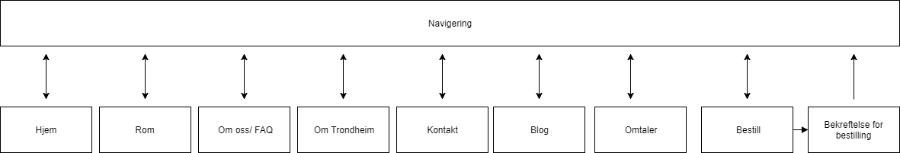Siden vi vil ha en åpen og enkel løsning vil alle sidene være koblet sammen gjennom navigasjonsbaren øverst på siden som er tilgjengelig på alle sidene. En komplisert nettside med flere sider inni hverandre vil distrahere publikummet fra å bruke penger. Vi vil helst ikke at paranoide reisere skal lete desperat etter det som står med “liten skrift”.
Det eneste unntak fra den åpne løsningen forekommer til bekreftelse/kvitteringen som du kun kommer deg til fra betalingssiden. Kvitteringen selv har derimot navigasjonsbaren og vil kunne linke til resten av sidene.
Under kan du se enda en illustrasjon som viser hvordan navigeringen kan ligne en clique, igjen med unntak av bekreftelsessiden.
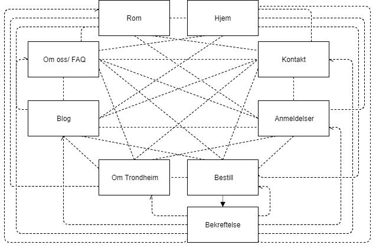Universelle designvalg
Lyse farger for det ungdommelig publikum. Header er lys/ mørkegrå, bakgrunn er hvit med svart tekst. Siden man er inne på til ethvert øyeblikk blir vist ved at bakgrunnen på knappen som linker til den siden er oransje. Det kommer også til å være visse andre detaljer i den samme oransje fargen. Grunnen til at vi har valgt oransje er vi føler det er en farge som kombinerer varmen og energien i det røde, og lykken, nysgjerrigheten og lekenheten i det gule, som til sammen gir oransje som passer perfekt mot vår eventyrlystne og drevne målgruppe. Skygger og border har vi styrt unna fordi det bare gjør siden mindre oversiktlig og mindre minimalistisk.
Til tekst er fontene “Times New Roman” og “Verdana” valgt. Times i brødtekst og Verdana i overskrifter og navigasjonen. Verdana er valgt fordi den ser fin ut og det er en ren og enkel tekst som er veldig leselig i store bokstaver. Times er valgt fordi vi synes den gjør brødtekst godt leselig, og den er vanlig å bruke i brødtekst, spesielt i ting som skoleoppgaver, som er noe målgruppen er vant med. I tillegg er den en fin kontrast til Verdanas helt rette kanter og sider, og skaper et bedre samspill på siden.
Tekststørrelsen er jevnt over ganske stor. Vi ønsker ikke nedlesse siden med mye info. Vi ønsker mye heller å gjøre det som er viktig veldig tydelig, og gjøre det enkelt å finne den informasjonen en ung reisende søker. Dette betyr helt spesifikt at overskriften på forsiden blir ca 60px, og brødteksten blir ca 25px, litt avhengig av skjermstørrelse.
Navigasjonsbaren vil ha en fast posisjon øverst på siden. Når man scroller nedover vil navbaren lime seg til toppen av vinduet, slik at den alltid er tilgjengelig.
Sidens footer vil befinne seg helt nederst til enhver tid. Om det ikke er nok innhold til å “dytte” den helt ned, vil den fortsatt oppholde seg nederst. Hvis det er nok, derimot, vil den bli dyttet ned, og først komme til syne når man scroller ned. Den kommer til å være svart med hvit tekst. Dette er gjort fordi vi mener den på den måten markerer tydelig slutten på siden, og gir en fin kontrast til resten av siden. Samtidig er den et sekundært element på siden, siden den fungerer litt som en bunntekst og vi ikke ønsker at den skal trekke så mye oppmerksomhet. Likevel gir den hvite teksten god lesbarhet, om man skulle ønske å lese informasjonen. I tillegg til kontaktinfo og adresse vil linker til sosiale medier i form av deres ikoner befinne seg her.
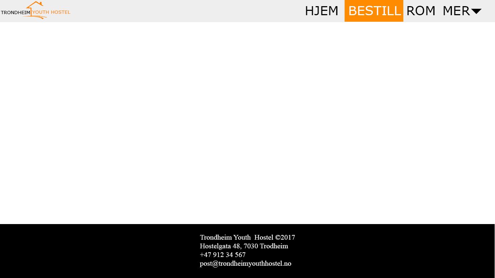Innhold
-
hjem.html
Forsiden vil ha en begrenset mengde med innhold. Vi ønsker at det skal være kort vei for kundene fra de kommer inn på siden til de har bestilt rom. Derfor vil hovedsiden kun inneholde et slideshow, en kort tekst og en "book nå"-knapp. Disse tre tingene skal vises uten at brukeren skal trenge å scrolle nedover. Dersom kunden er interessert i mer info, kan brukeren benytte seg av navigasjonsbaren øverst på siden, som har lokale linker.
Slideshowet vil bli det mest dominerende elementet på siden, og vil vise diverse bilder som skal virke lokkende for kunden. Bilder av rom, mat, hostelet, osv. En kort skryte-beskrivelse av hostelet vil ligge ved siden av slideshowet, og under begge elementene det skal det være en knapp som lar bruker gå rett til bestilling. Siden vi har en relativt ung målgruppe som kun ønsker et billig rom for et par netter, ønsker vi at det skal være meget enkelt å gå rett til betalingen.
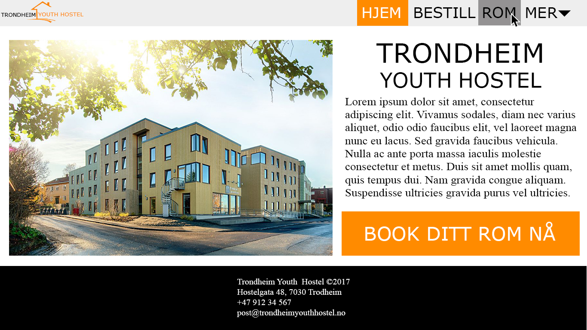 -
Bestilling.html
Bestillingssiden vil være noe forenklet. Den vil spørre kunden om hvilke datoer en ønsker å reservere, hvor mange personer, hva slags romtype og om man ønsker frokost inkludert i prisen. Siden vil da regne ut beløpet og oppdatere prisen for kunden til høyre på siden. Under dette vil siden be kunden skrive navn, epost og telefonnummer. Nederst på siden vil det være en knapp med "Betal". I stedet for å sende brukeren over til en side hvor man utfører bestillingen, ønsker vi at man blir sendt til en ny side som forteller brukeren at betalingen er registrert.
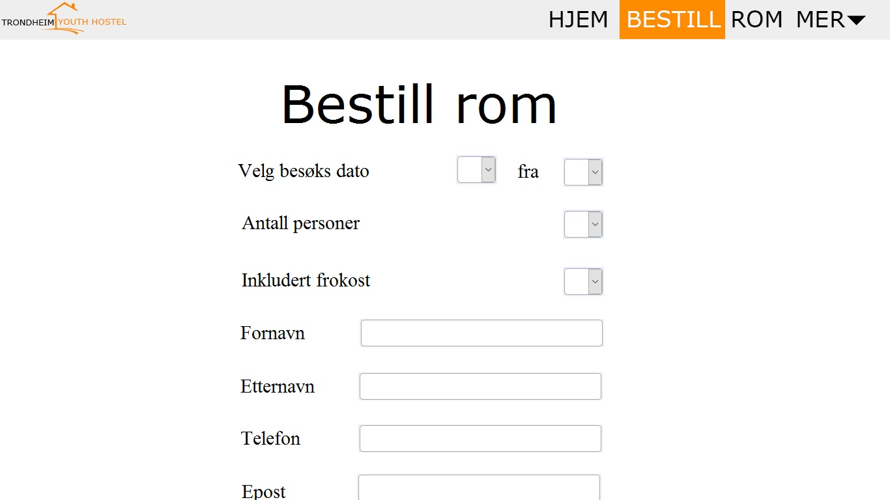 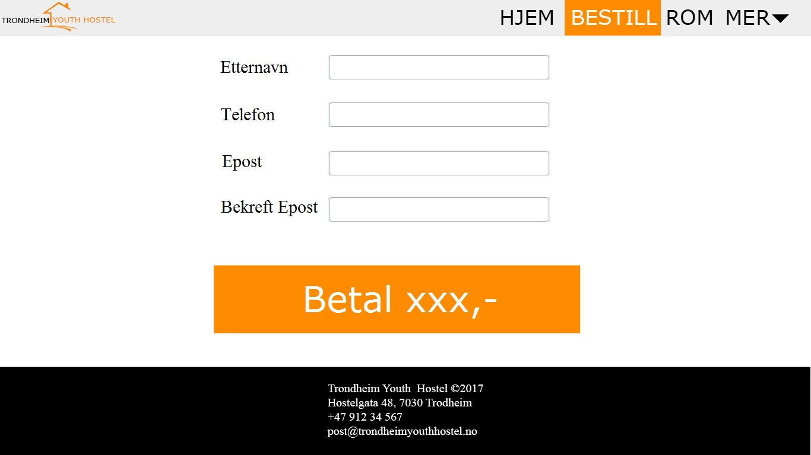 -
Bekrefetelse.html
En side som vil gi brukeren brukeren en bekreftelse på at betaling er mottatt. Siden vil også gi kunden et referansenummer og en beskjed om at en bekreftelse har blitt sendt på epost.
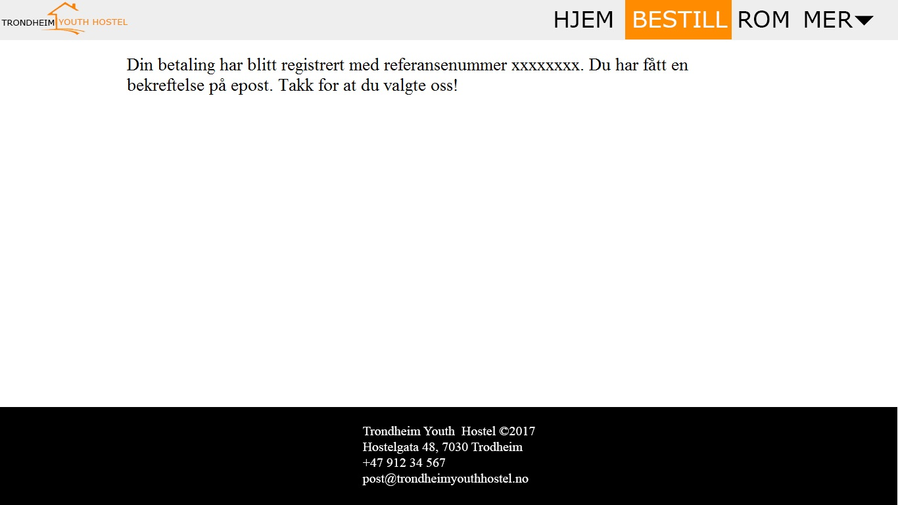 -
Rom.html
“Rom”-siden skal vise bilder av rommene som Trondheim Youth Hostel har å tilby. Det skal også gi en forklaring på rommet, med størrelse og hva rommet har å tilby, samt gi en pris for leie.
Bildene skal flytes mot høyre og tekst skal ligge på venstre side av bildet. Hvert rom har sin egen overskrift, som følger det universelle designet og fargevalget.
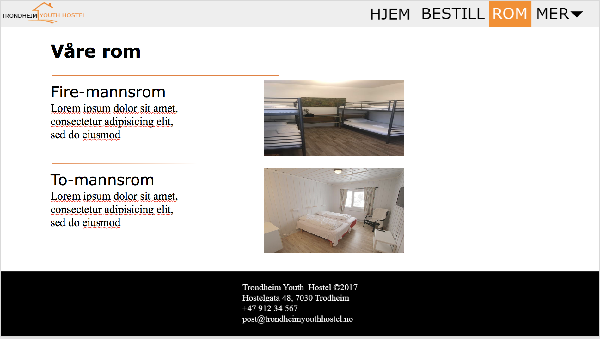 -
mer_om_oss.html
“Om oss”-siden vil gi en kort introduksjon om hva Trondheim Youth Hostel er og hvor det ligger, sammen med mer informasjon som kan være nødvendig.
Vi legger også ved en FAQ like under den korte introduksjonen, slik at brukere kan få svar på spørsmål som ofte blir stilt uten å måtte selv ta kontakt.
Denne siden vil la gjester og potensielle gjester få svar på generelle spørsmål, og mer innsikt i hva det er Trondheim Youth Hostel kan tilby.
Siden vil ha et enkelt design i samme stil som det universelle designet, og det vil legge ved et bilde av Trondheim Youth Hostel sett fra gateplan. Bildet skal flyte mot venstre, og teksten til høyre. FAQ-delen nederst skal gjennom javascript skape et stilrent design, som viser svaret til et spørsmål kun når en bruker klikker på det. Dette vil gjøre nettsiden ryddig og oversiktlig.

-
mer_anmeldelser.html
Nettsiden “Anmeldelser” vil være dedikert for at kunder kan legge igjen anmeldelser etter besøk. Dette vil fungere som en betryggende veileder for potensielle kunder, og selv om det kan komme noen negative omtaler vil det i det minste være mulig for mottakeren å lese kommentarene for å vurdere om dette betyr noe for dem. Det er nok ikke mange folk som tør å bestille hotell nå til dags helt blindt uten å se noen anmeldelser, så denne nettsiden vil være essensiell for å lokke kunder. Anmeldelsene vil presenteres i en kolonne av innrammede bokser som er midtstilt på siden, og helt på toppen vil det være et felt dedikert for at brukere skal kunne legge inn nye anmeldelser.
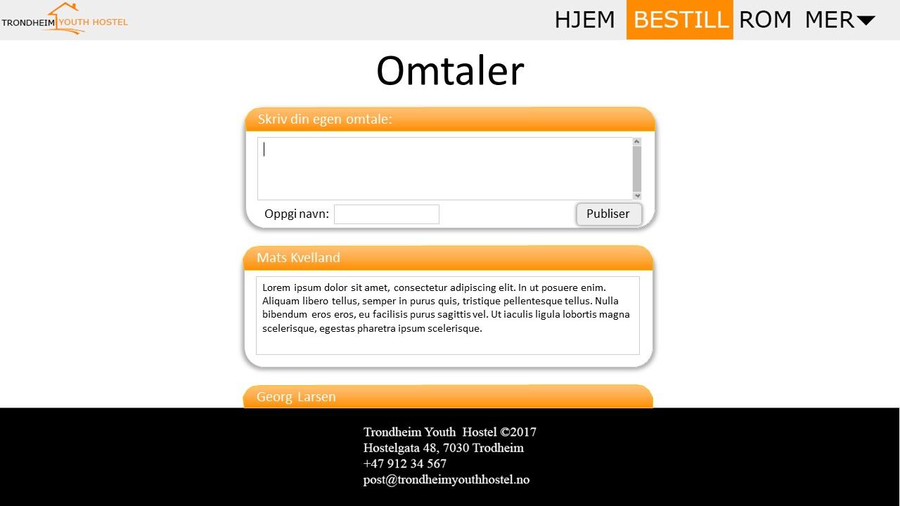 -
mer_kontakt_oss.html
I nettsiden “Kontakt oss” vil det lett tilgjengelig finnes informasjon om hvordan man kan kontakte bedriftsledelsen. Dette i form av mobilnummer, email og hotellets adresse. For brukernes bekvemmelighet kan det tilføyes en link som viser lokasjonen bedre på google maps, og det kan også implementeres en måte å sende email direkte fra denne siden. Innholdet vil være midtstilt, og innsendingsskjemaet vil bestå av forskjellige inputbokser hvor forklaringstekst og submitknapp er oransje for å følge temaet. 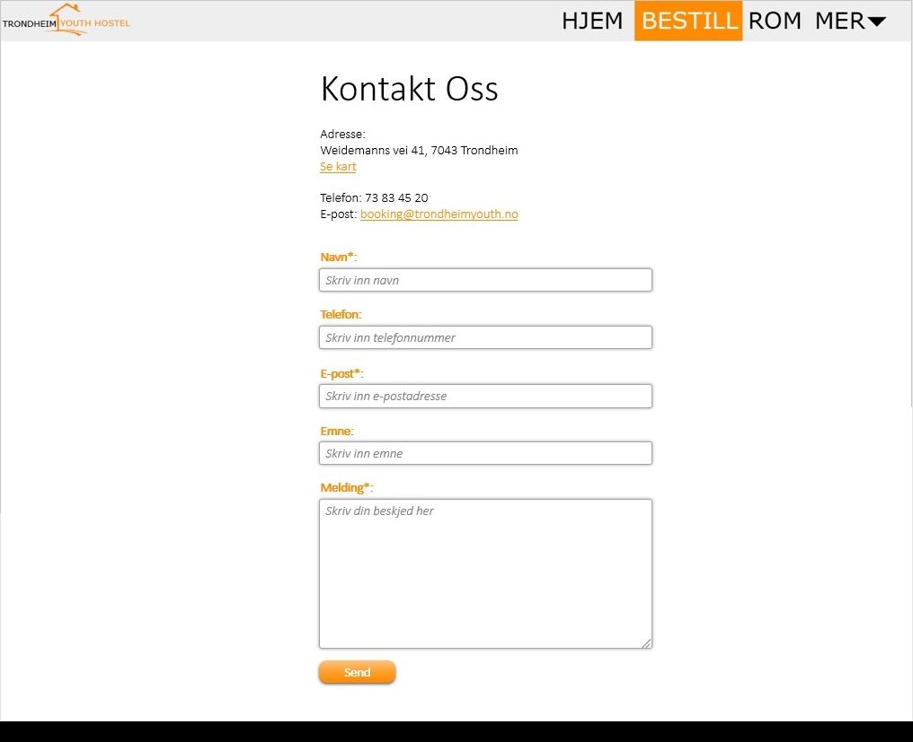
-
mer_blog.html
Bloggen er til for at et samfunn skal kunne utbre seg rundt hostellet og for at de som har besøkt vil kunne ha minner om oppholdet og potensielt kunne ønske seg i større grad tilbake. Bloggen er også god reklame for nye gjester, da vi kan vise den varme tilhørigheten hostellet tilbyr gjennom dagligdagse historier og karakterer fra hostellet.
Kommentarer til innleggene er også ønskelige da gamle gjester kan komme og gi sine egne utdypninger fra deres opplevelser rundt disse innleggene.
Strukturen vil være enkel med nyeste innlegg øverst og vært innlegg delt inn i en seksjon med tekst og bilder. Da det vil være flere bilder burde bildene vises som thumbnails i en kollasj som blir forstørret når man klikker på dem. Hvert innlegg starter med overskrift og metadata, bildeserie og tekst.
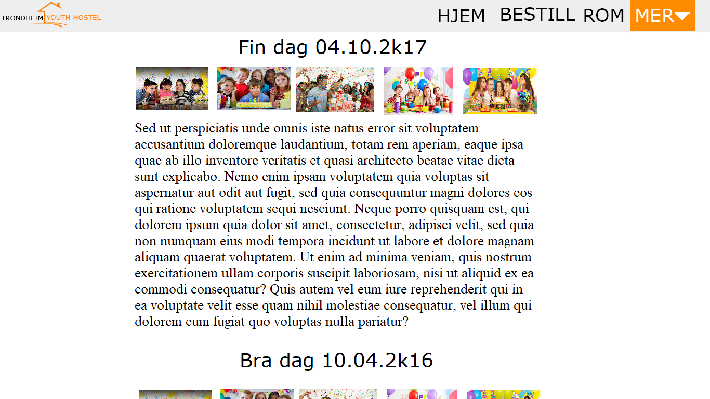 -
mer_om_trondheim.html
God reklame for de som vurderer å besøke og god informasjon for de som er på hostellet og ønsker seg en utflukt. Denne siden vil ha artikler om severdigheter, restauranter og opplevelser i nærområdet med linker til respektive sider med mer informasjon.
Siden vil være enkelt strukturert med bilder, tekst og linker enkelt koblet sammen i seksjoner. Hver seksjon starter med overskrift og et bilde under til høyre og en tekst under til venstre.
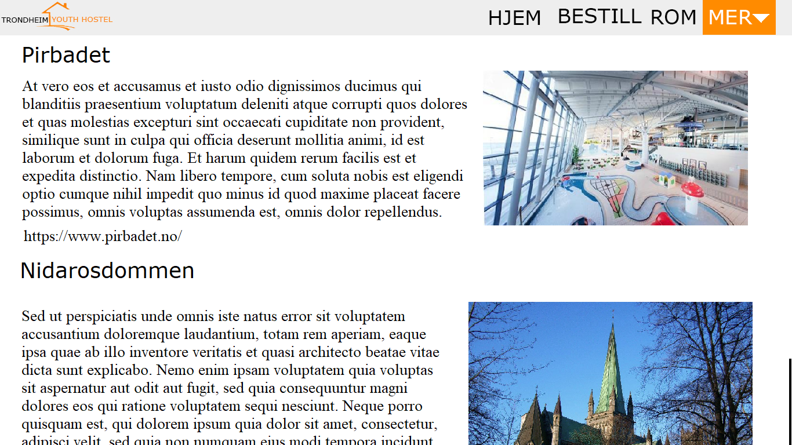
Minimumskrav
Alle populære nettsted nå til dags har noen form for interaksjon til fordel for brukernes bekvemmelighet. For at vårt nettsted også skal ose av profesjonalitet vil følgende javascriptfunksjonaliteter implementeres:
-
En javascriptfunksjon som i faste tidsintervall viser et nytt bilde av hotellet på forsiden. Dette slideshowet må ha en fast bestemt rekkefølge, ettersom det skal være mulig for brukeren å navigere seg gjennom bildegalleriet selv enten ved hjelp av sirkulære knapper for hvert bilde nedenfor, eller med pilknapper til høyre og venstre som blar gjennom bildene sekvensielt. Med tanke på målgruppen som skal appelleres til er det viktig at denne funksjonen implementeres, for slideshow er en god måte å gi mye informasjon i form av bilder fremfor mye tekst som ungdommer ikke har konsentrasjonsevne nok til å lese.
-
En javascriptfunksjon som i nettsiden “FAQ” viser svaret til et spørsmål kun når en bruker klikker på det. Dette vil gjøre nettsiden mye ryddigere og oversiktlig. Den siktede målgruppen vår blir dessuten fort overveldet av store mengder tekst.
-
En javascriptfunksjon som gjør at nettstedets logo av et lukket hus endres til en animert gif som åpner husets dør når brukeren styrer musepekeren over den.
-
En javascriptfunksjon som lar brukeren skrive og sende inn egne anmeldelser slik at de vises blant andre falske anmeldelser som potensielt stilles opp i tilfeldig rekkefølge for å styrke illusjonen om at det faktisk lagres noe på en server.
-
En funksjon som forstørrer bilder når de klikkes og eventuelt dimmer alt annet i bakgrunnen for å sette fokus
-
En funksjon som automatisk regner sammen summen av bestillingen når du legger til bookinger, og presenterer denne summen før du godkjenner bestillingen.
-
En funksjon som fester navigasjonsbaren til toppen av vinduet når man scroller nedover, slik at navigasjonen alltid er tilgjengelig.
Plan
Oversikt over filer
- hjem.html
- rom.html
- bestilling.html
- bekreftelse.html
- mer_kontakt.html
- mer_om_oss.html
- mer_blog.html
- mer_om_trondheim.html
- navbar.html
- footer.html
- /scripts
- slideshow.js
- faq.js
- logo.js
- anmeldelse.js
- bilde_edit.js
- sum.js
- /images
- rom1.jpg
- rom2.jpg
- ...
- blogg1_bilde1.jpg
- blogg1_bilde2.jpg
- blogg2_bilde1.jpg
- ...
- omTrondheim1.jpg
- omTrondheim2.jpg
- ...
- stig.jpg
- ...
- style.css
| Filnavn | Beskrivelse | Hovedansvar | Deadline |
|---|---|---|---|
| hjem.html | Hjemmesiden | Anders | 24.10.17 |
| rom.html | Bilder og beskrivelse av rommene | Martin | 25.10.17 |
| mer_om_oss.html | Om hostellet og en kort FAQ | Martin | 25.10.17 |
| bestilling.html | Bestillingsside | Anders | 25.10.17 |
| bekreftelse.html | Bekreftelse på bestilling med detaljer angående valgt bestilling | Ander | 25.10.17 |
| mer_kontakt.html | Info om hvordan kontakte | Lars | 27.10.17 |
| mer_blog.html | Tilbakemeldinger fra tidligere besøkende | Mathias | 27.10.17 |
| mer_om_trondheim.html | Informasjone om Trondheim som by og hva man kan se | Mathias | 28.10.17 |
| navbar.html | Navigasjonen som brukes på tvers av siden | Lars | 28.10.17 |
| footer.html | Footer som bruker på tvers av siden | Lars | 28.10.17 |
| slideshow.js | La flere bilder bevege seg på forsiden til hjemmesiden | Mats | 05.11.17 |
| faq.js | FAQ, svarer til kun et spørsmål | Lars | 05.11.17 |
| logo.js | Logoen åpner døra når man styrer musa over den | Mats | 06.11.17 |
| anmeldelse.js | anmeldelser som blir random lagt ut | Mats | 06.11.17 |
| bilde_edit.js | Forstørrer bilder | Mats | 07.11.17 |
| sum.js | Regner summen av bestilling | Martin | 07.11.17 |
| sticky.js | Gjør at navigasjonsbaren holder seg på toppen selv om man scroller nedover | Lars | 06.11.17 |
| style.css | CSS-filen som inneholder all styling for siden | Alle | 11.11.17 |
| Siste sjekk | Sjekke hele filen for feil, javascript og css | Alle | 12.11.17 |